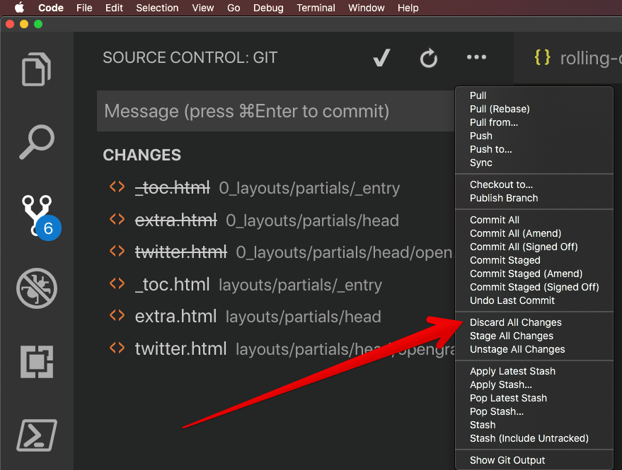

Often when I’m working on this blog, I work over multiple days and end up working on multiple devices. The blog is written in markdown and tracked in a Git repo on Azure Devops. The other day a scenario arose where I was customizing the theme of the blog but not getting anywhere. I decided to have another go at the customization few days later but this time on another device. Luckily, I was able to make progress and achieve the style I was looking for.
Houston, we have a problem
At this point, I had a problem that developers will often face but it was new to me. I had work-in-progress changes on device 1 as well as completed changes on device 2 that I had already pushed to remote. I knew I would be working on device 1 the next day and would not be able to pull in remote changes without causing merge conflicts.
The easy way
I use Visual Studio Code for editing the markdown. VS Code places a whole set of git operations just a click away. Discard is one of them as shown in the image below

Let’s make it harder
However, I have been trying to learn more and more git commands I can use in the terminal. What better way to learn than actually doing it right? As one often does in times of need – I took to my favorite search engine to find an answer. I quickly arrived on this Stack Overflow post with the command below:
git stash save --keep-index --include-untracked
I ran the above command and it seems to have worked out! Another win for Stack Overflow!
Reach out if you have any questions! Feel free to follow me on
- Twitter - @singhkays
- LinkedIn - https://www.linkedin.com/in/singhkays/